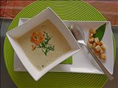
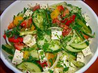
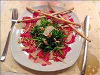
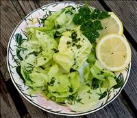
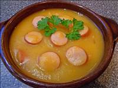
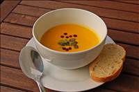
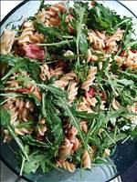
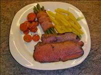
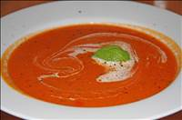

Vorspeisen
Baerlauch - Sahnesuppe mit Croutons

Zutaten:
1 kleine Zwiebel(n)
80 g Butter
50 g Mehl
100 ml Weißwein, trockener
750 ml Fleischbrühe
250 g Sahne
150 g Crème fraîche
Salz und Pfeffer
Zucker
20 Blätter Baerlauch
1 Eigelb
etwas Zitronenschale, abgeriebene, unbehandelt
3 Scheibe/n Toastbrot
Zubereitung:
Die Zwiebel schälen und fein würfeln, dann in 50 g Butter andünsten.
Mehl dazugeben und glatt rühren. Mit Weißwein, Brühe und 150 g Sahne aufgießen.
Alles etwa 3 Min. unter Rühren kochen lassen.
Crème fraiche zugeben und die Suppe mit Salz, Pfeffer und einer Prise Zucker abschmecken.
Baerlauch waschen, trocken tupfen und fein schneiden. In die Suppe geben. Anschließend mit dem Mixer pürieren.
Toastbrot entrinden, in Würfel schneiden und in der restlichen Butter goldbraun rösten.
Kurz vor dem Servieren das Eigelb mit der restlichen Sahne verquirlen, langsam in die Suppe fließen lassen und mit dem Mixstab aufschlagen.
Die Zitronenschale zufügen und abschmecken. Nicht mehr kochen!
Suppe in Teller füllen und mit Toastbrotwürfeln servieren.
Arbeitszeit: ca. 20 Min.
Bauernsalat, griechisch

Zutaten:
1 Zwiebel(n)
4 Tomate(n), feste
1 Salatgurke(n)
2 Paprikaschote(n), grüne
200 g Schafskäse
150 g Oliven, schwarze
3 EL Wasser
3 EL Essig (Weißweinessig)
6 EL Olivenöl
¼ TL Salz
½ TL Oregano
1 Prise(n) PfefferZubereitung:
Zwiebel schälen und in dünne Ringe schneiden. Tomaten waschen, vierteln und den Stielansatz entfernen. Salatgurke schälen, der Länge nach halbieren (eventuell größere Kerne entfernen) und in 4 - 5 mm dicke Scheiben schneiden. Paprikaschoten halbieren, entstielen, entkernen, waschen und in dünne Streifen schneiden. Den Schafkäse würfeln.
Alles - zusammen mit den Oliven - in eine Schüssel geben.
Aus dem Wasser, Weißweinessig, Olivenöl, Salz, Oregano und Pfeffer eine Marinade anrühren und über den Salat gießen. Mit Salatbesteck oder ähnlichem vorsichtig, aber gut, vermischen.
Zu diesem erfrischenden Salat aus dem Süden Europas passt besonders gut Weißgebäck wie Fladenbrot, Baguette.
Arbeitszeit: ca. 20 Min. Berliner Kartoffelsuppe

Zutaten:
2 ½ kg Kartoffel(n), mehlig kochende
1 kg Suppengemüse, TK
250 g Schinken, gewürfelter (Katenschinken oder magerer Speck)
3 Zwiebel(n)
1 kg Würstchen (z. B. Dampfwürstchen mit Majoran)
3 Lorbeerblätter
4 Körner Piment
2 EL Gemüsebrühe oder Klare Brühe (Instant)
Salz und Pfeffer
1 Paket Petersilie, TK
1 EL MargarineZubereitung:
Die Kartoffeln schälen, klein schneiden, knapp mit Wasser bedecken, salzen und zum Kochen bringen.
In einem zweiten großen Topf die Margarine zerlassen und den Katenschinken oder Speck scharf darin anbraten. Die Zwiebeln schälen, in grobe Stückchen schneiden und dazugeben, aber nur glasig werden lassen. Sie sollen keine Farbe nehmen. Das TK Gemüse dazugeben, mit etwas Wasser (ca. ½ Liter) ablöschen und aufkochen lassen. Gemüsebrühe (Instant), Lorbeerblätter, Piment und ca. 1 TL Pfeffer dazugeben, gut umrühren und auf kleiner Flamme köcheln lassen, bis die Kartoffeln im anderen Topf gar sind.
Dann das Kartoffelwasser zum Gemüse gießen (nicht wegschütten!). Die Kartoffeln stampfen und den Kartoffelstampf auch zum Gemüse geben. So viel Wasser dazugeben, dass es insgesamt etwa 5 Liter Flüssigkeit ergibt. Die Kartoffelsuppe soll aber schön dick sein, nicht zu wässerig. Aufkochen lassen und noch ein paar Minuten auf kleiner Flamme köcheln lassen.
Inzwischen die Würstchen in ca. 1 cm dicke Scheiben schneiden und mit in den Topf geben. Zum Schluss noch die Petersilie unterrühren und mit Salz und Pfeffer abschmecken.
Am besten schmeckt die Suppe, wie alle Eintöpfe, erst am zweiten Tag. Reste lassen sich gut einfrieren!
Arbeitszeit: ca. 40 Min.Carpaccio vom Rind

Zutaten:
400 g Rinderfilet(s), oder Roastbeef, hauchdünn geschnitten
1 Pck. Rucola
1 Stück(e) Parmesan, frisch gehobelt
2 Zitrone(n), den Saft
100 g Pinienkerne
Balsamico
Olivenöl, extra vergine
Pfeffer, schwarz, aus der Mühle
Meersalz
Baguette(s)Zubereitung:
4 Teller mit Balsamico beträufeln und mit einem Pinsel verteilen, so dass der gesamte Teller dünn bedeckt ist.
Die Pinienkerne anrösten und den Rucola waschen.
Die dünnen Rinderfilet-Scheiben, den Rucola und die Pinienkerne auf die Teller geben, und den Parmesan hauchdünn darüber hobeln. Jetzt mit Salz, Zitronensaft und Pfeffer würzen, das Olivenöl darüber träufeln. Ich nehme auch noch etwas Balsamico dazu.
Dann in sofort mit dem Baguette servieren.
Damit das Rinderfilet leichter in hauchdünne Scheiben geschnitten werden kann, friert man das Filet vorher etwas an. Dazu braucht man aber noch entweder ein sehr scharfes Messer, oder eine Aufschnittmaschine. Ansonsten kann man sich auch in der Art helfen, dass man die etwas dickeren Scheiben zwischen 2 Gefrierbeutel legt und mit einem Fleischklopfer oder einer Kasserolle vorsichtig flach klopft, oder das Filet beim Metzger aufschneiden lässt.
Arbeitszeit: ca. 15 Min.Grüner Salat mit Zitrone

Zutaten:
1 Kopf Salat (Grüner Salat)
1 EL Essig oder Zitronensaft
3 EL Öl
1 Prise(n) Salz
Zucker, nach eigenem Geschmack
Dill, frisch oder TK
1 Zitrone(n)Zubereitung:
Salat waschen und in mundgerechte Stücke zupfen.
Die Essig/ Öl-Marinade bereiten und abschmecken, Dill dazu geben.
Nun die Zitrone schälen und in kleine Würfel schneiden.
Alles gut vermischen.
Arbeitszeit: ca. 10 Min.Kartoffelsuppe

Zutaten:
1 kg Kartoffel(n)
4 Karotte(n)
1 Bund Suppengrün
2 EL Gemüsebrühe, instant
3 Paar Wiener Würstchen
n. B. WasserZubereitung:
Die Kartoffeln und die Karotten schälen und schnippeln. Das Suppengrün auch grob zerkleinern. Muss alles nicht so genau sein. Dann alles in einem großen Topf mit so viel Wasser geben, dass das Gemüse knapp bedeckt ist und in der Gemüsebrühe gar kochen. Anschließend alles durch eine Passiermühle (Flotte Lotte) drehen.
Mit Salz und Gemüsebrühe nochmal abschmecken und evtl., falls die Suppe zu dick ist, mit Wasser verdünnen. Sie darf aber ruhig dickflüssig sein, so mag ich sie zumindest am liebsten. Am Schluss noch die Wiener in Scheiben schneiden und dazugeben.
Arbeitszeit: ca. 10 Min.
Koch-/Backzeit: ca. 20 Min.Kuerbissuppe mit Ingwer und Kokosmilch

Zutaten:
800 g HokkaidoKuerbis(se), geputzt gewogen
600 g Möhre(n), geschält gewogen
1 Zwiebel(n)
5 cm Ingwer
2 EL Butter
1 Liter Gemüsebrühe
500 ml Kokosmilch
Salz und Pfeffer
Sojasauce
1 Zitrone(n), ausgepresst
Koriandergrün zum GarnierenZubereitung:
Kuerbis, Möhren, Ingwer und Zwiebel schälen und würfeln, in der Butter andünsten. Mit der Brühe aufgießen und in etwa 15 - 20 Minuten weich kochen. Dann sehr fein pürieren, eventuell durch ein Sieb streichen. Die Kokosmilch unterrühren, mit Salz, Pfeffer, Sojasauce und Zitronensaft abschmecken und noch mal erwärmen. Mit Korianderblättchen garniert servieren.
Eine schnelle, leicht exotische Suppe, schön im Menü. Ich benutze für diese Suppe immer einen Hokkaido, den muss man nicht schälen. In Thailand isst man Kuerbissuppe mit kleinen Garnelen als Einlage.
Arbeitszeit: ca. 30 Min.
Koch-/Backzeit: ca. 20 Min.Nudelsalat auf italienisch

Zutaten:
250 g Penne oder andere Nudeln
200 g Mozzarella
100 g Tomate(n), getrocknet
150 g Parmaschinken
50 g Pinienkerne
1 Zehe/n Knoblauch
Salz und Pfeffer
70 ml Olivenöl, extra virgine
3 EL Balsamico, weiß oder dunkel, je nach Geschmack
1 TL Pesto
1 TL Senf
1 TL Honig
Parmesan, frisch gerieben
RucolaZubereitung:
Die Nudeln kochen und mit kaltem Wasser abschrecken. Die Pinienkerne in der Pfanne bei mittlerer Hitze ohne Fett leicht anbräunen. Rucola gut waschen, trocken schleudern und etwas kleiner schneiden. Die getrockneten Tomaten gut abtropfen lassen und wie den Mozzarella und den Parmaschinken klein schneiden.
Alles in eine große Schüssel geben, salzen und pfeffern.
Öl, Essig, klein gehackte oder gepresste Knoblauchzehe, Pesto, Senf und Honig miteinander vermischen und kurz vor dem Essen über den Salat geben.
Alles noch einmal gut durchmischen und mit dem Parmesan garnieren.
Arbeitszeit: ca. 25 Min.
Koch-/Backzeit: ca. 15 Min.Roastbeef

Zutaten:
3 kg Roastbeef
3 EL Ghee oder Butterschmalz oder Öl
Salz und Pfeffer, schwarzer und grüner aus der MühleZubereitung:
Das Fleisch parieren und die Fettschicht oben vorsichtig rautenförmig einschneiden (Vorsicht dabei: Nicht ins Fleisch schneiden!). In einer ausreichend großen Pfanne das Fleisch rundherum in ausreichend Fett anbraten. Dann pfeffern und salzen, in den auf 200 °C vorgeheizten Ofen stellen und auf 160°C herunterschalten.
Mit einem Fleischthermometer die Kerntemperatur kontrollieren: wenn 50°C erreicht sind, den Ofen ausschalten, das Fleisch aber so lange drinlassen, bis eine Kerntemperatur von 57° erreicht ist. Die genaue Zeit hängt von der Dicke des Fleischstückes ab.
Weil es im Ofen bereits die Ruhezeit hatte, kann das Fleisch bei dieser Methode sofort serviert werden. Es schmeckt aber auch kalt, dünn aufgeschnitten.
Arbeitszeit: ca. 10 Min.
Koch-/Backzeit: ca. 35 Min. Ruhezeit: ca. 10 Min.Tomatensuppe

Zutaten:
1 kg Tomate(n), geachtelt
2 Zwiebel(n), klein gehackt
2 Knoblauchzehe(n)
3 EL Öl zum Braten
2 TL Basilikum
1 Prise(n) Thymian, getrocknet
1 Prise(n) Majoran, getrocknet
1 Prise(n) Rosmarin
750 ml Fleischbrühe
2 EL Tomatenmark
1 EL Gin
Salz und Pfeffer
4 TL Crème fraîcheZubereitung:
Die Zwiebeln und den Knoblauch sehr klein würfeln und im Öl glasig dünsten. Die Tomaten und alle Gewürze zugeben, Deckel auf den Topf und 15 Min. köcheln lassen.
Die kochende Brühe aufgießen, weitere 5 Min. kochen lassen und dann durch ein Sieb passieren.
Noch mal erhitzen, Tomatenmark unterrühren und Gin dazugeben, abschmecken.
Arbeitszeit: ca. 15 Min.
Koch-/Backzeit: ca. 25 Min.